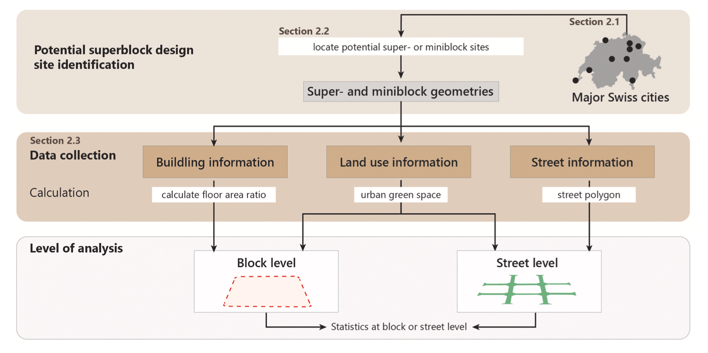

8 Temperature
8.1 Summary
8.1.1 Urban Heat Island
8.1.1.1 Factors
Two main factors
more dark surfaces that retain heat
less vegetation that cools environment
Other factors
low Sky View Factor(SVF)
air speed, cloud cover, cyclic solar radiation, building material type
social factors
environmental
economic(local and gdp)
8.1.2 Global policy
New urban agenda
Sustainable Development Goals
Beat the heat handbook
Superblock
Background
Superillies-15min city
Future: wide scale
Green corridors
Sydney western hubs
Reflections
- Useful project ideas but not given specifics
8.1.3 Metropolitan UHI reduction activities
voluntary
policy
Metropolitan strategies
Local city mandate
Exapmles: Fremantles’s urban forest plan
Planning requirements:
Perth
Singapore: location is ignored just say you have to have it
8.2 Application
In my perspective, the construction of a superblock in Barcelona appears to bring more benefits than harm. By restricting the use of cars within the superblock, there is a decrease in harmful emissions, which can improve air quality(Nieuwenhuijsen and Khreis 2016). Additionally, the inclusion of more green spaces can help reduce the urban heat island effect while also enhancing the visual appeal of the community. The design of the superblock encourages individuals to cross the streets on foot, promoting increased physical activity. This pedestrian-friendly environment can also boost local businesses, as people are more likely to stop and explore street-side shops.
Besides, I am interested in learning how to evaluate whether a city block has the potential to become a superblock.
In the article proposed by Eggimann (2022), they firstly identified possible superblock locations, whose geometric properties resemble Barcelona’s superblocks. Then they collected street information, building information and land use for the assessment of potential superblock implementation in different levels (see as Figure 1).

As we are concerning remote sensing application, so I would ignore the details of street and building information. They need the current state of the urban green space to derive potential opportunities for converting grey (or non-green) space. They therefore used a canopy height model developed by Christian Ginzler (2021) to identify everything classified as urban green with a height above 5 cm.
The canopy height model, also known as the Vegetation Height Model, has been developed specifically for Switzerland. To create this model, stereo images provided by the Swiss authorities were utilized to generate a digital surface model (DSM). The DSM was subsequently normalized using a Digital Terrain Model (DTM) that was based on laser data with buildings masked out. This allowed for the accurate calculation of vegetation heights.
This study for assessing the potential of blocks being converted to superblocks has the transferability to apply to other cities using corresponding datasets. However, it’s important to note that this study only considered the opportunities of converting urban green spaces. In the future, more comprehensive evaluations that consider the interplay between public transportation, and walkability will be necessary.
8.3 Reflection
- It’s a common observation that policies often require us to reduce the Urban Heat Island effect without providing clear guidance on how to do so. This can make it difficult for cities to develop effective strategies to combat UHI.
- However, effective strategies for reducing the Urban Heat Island effect require a cohesive approach that spans different levels of government and stakeholders. This includes coordination between local policies, metropolitan strategies, and global policies.
- It’s also important to note that some reducing UHI effect strategies may not be suitable for every city. For example, in practical, the research found that some Swiss city are not appropriate for employ superblocks. Therefore, before implementing any strategy, it’s crucial to conduct a thorough evaluation to understand the unique characteristics of the city and to identify the most appropriate strategies.